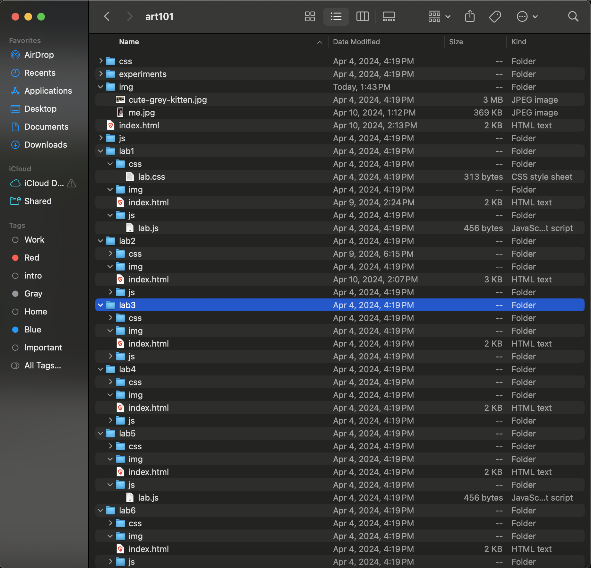

Lab 3 - File Structures
Challenge
The Idea of this lab was to continue to get more familiar with the file structure of all the files we will be utilizing. Adding index.html files/ working on existing files within our directory.
Problems
One of the problems was linking everything properly I was only including /pathtoImage but I was forgeting the .
Reflection
After working on labs 1-3 so far I feel comfortable with the structure of the files and my code. I was able to complete all the requirements of the lab
Results
here is my current file structure
